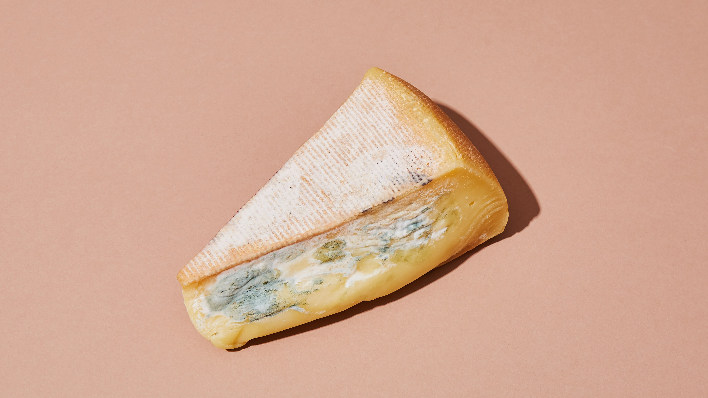
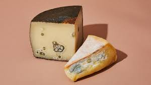
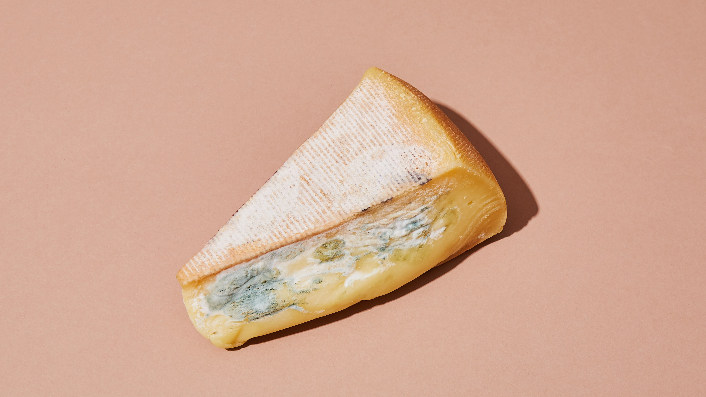
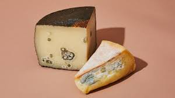

Contact us:
004712345678
notreal@CheezFreez.com


CheezFreez © 2019
Contact us:
004712345678
notreal@CheezFreez.com
CheezFreez © 2019
Where cheese is the bee's knees
Did you know?
Cheese is a very important part in todays society! However, cheese has one major flaw. It goes bad. Dun dun dun. Dramatic pause.
Here at Cheese Freeze © we love cheese. So much that we want to protect every single piece of cheese there is in the entire world. This goal is still not solved sadly.
However! There is one way in which this goal could be met. Everyone in the world buying our patented product:
CheezFreez ™
This would not only solve the problem of cheese going to waste. It would also solve the very real problem of our pockets not brimming with money. Which obviously needs to be fixed. Stat. If this whole thing sounds too good to be true to you then head on down to the bottom of the page where you can buy the CheezFreez. If you need more convincing then keep on reading my friend. If you after all of this do not buy the CheezFreez I can only assume you're a cheese violator that we deem not worthy of our CheezFreez anyways.
 



Oh my god would you look at that travesty. Isn’t this just way too relatable? Have you ever experienced this yourself?
Is your food also up to no gouda? Of course it is, everyone’s food is! And in Norway, especially the cheese. Our cheese “gulost” - a type of gouda - is in a packaging that is not sealable when opened. This is a major societal issue because it leads to our cheese going bad at an incredibly fast pace.
As you see in the picture(s) above, cheese, when unattended for an extended period of time, does go bad. It can be up to no gouda! And things could definitely brie better.
Most people, when faced with such a scenario, would throw the cheese out. Us sorry Norwegians need a way to be able to stop all this cheese going to waste. Do you have something in mind that could fix this? Of course you don’t, but we (fon)due!